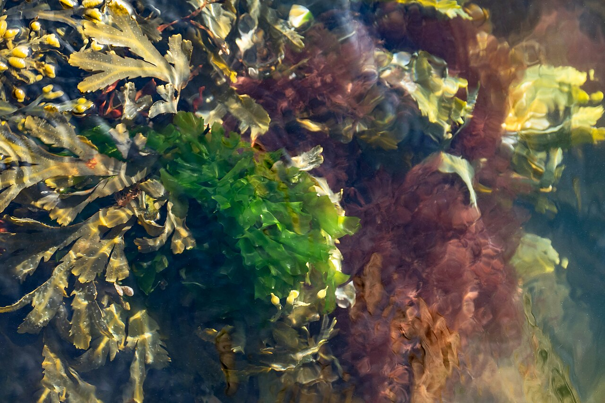
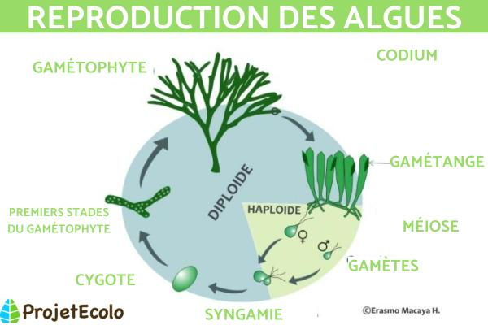

Algues
> 1 milliard d'années
Le problème que ce groupe a resolu
Vivre dans l'eau : pas de risque de dessèchement, pas besoin de support.Le corps est un thalle, sans vraies racines, tiges ni feuilles.
Appareil végétatif

Le thalle absorbe l'eau et les sels minéraux sur toute sa surface.
Reproduction

Le gamète mâle nage jusqu'à l'ovule : la reproduction dépend de l'eau.
Observé sur le terrain

Les algues ne forment pas un seul groupe : seules les algues vertes sont les ancêtres des plantes terrestres.
← Retour au menu